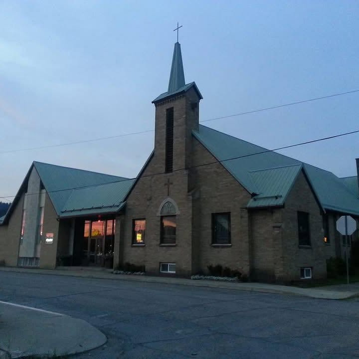

Our Story, Faith & Mission
Proclaiming God's Word, sharing the grace of Jesus Christ, and serving our Kellogg and Silver Valley community.
A Christ-Centered Family in Kellogg
At American Lutheran Church, we are united by God’s grace in Jesus Christ.
Located at 15 E Mullan Ave in Kellogg, Idaho, we are committed to being a welcoming home for worship, encouragement, and Christian community in the Silver Valley.
Led by Pastor Craig Shorey, our worship services center on God's Word, the Gospel of Christ, and open Christian fellowship.
Our Core Lutheran Convictions
Rooted in the timeless truths that point us back to the heart of the Gospel.
Grace Alone
Sola GratiaWe believe that we are reconciled to God entirely by His free gift of grace through Jesus Christ's death and resurrection, not by our own works.
Faith Alone
Sola FideTrust in Jesus Christ as Lord and Savior is how we receive God’s forgiveness and eternal life. Faith is created in our hearts by the Holy Spirit.
Scripture Alone
Sola ScripturaThe Bible is the inspired, authoritative Word of God and the only true norm and source for our Christian faith, daily living, preaching, and teaching.
How We Gather & Worship
The Sacraments: As Lutherans, we celebrate two holy sacraments commanded by Christ: Holy Baptism and Holy Communion. All baptized believers who trust in Christ are invited to the table.
Worship Style: Our Sunday service is grounded in the reverent beauty of traditional Lutheran liturgy, historic hymnody, responsive prayers, and faithful biblical preaching.
Come As You Are: Whether in casual mountain attire or Sunday best, you are welcome here.
Serving the Silver Valley Community
Pastor Craig Shorey
Pastor Craig Shorey serves American Lutheran Church in Kellogg, Idaho, leading our Sunday morning worship services, preaching God’s Word, and providing pastoral care to our church family and Silver Valley neighbors.
Church Office & Location
American Lutheran Church
15 E Mullan Ave
Kellogg, ID 83837
Phone: (208) 786-7791
Pastor: Craig Shorey
Services: Sundays at 10:00 AM
Located in historic downtown Kellogg, Idaho.